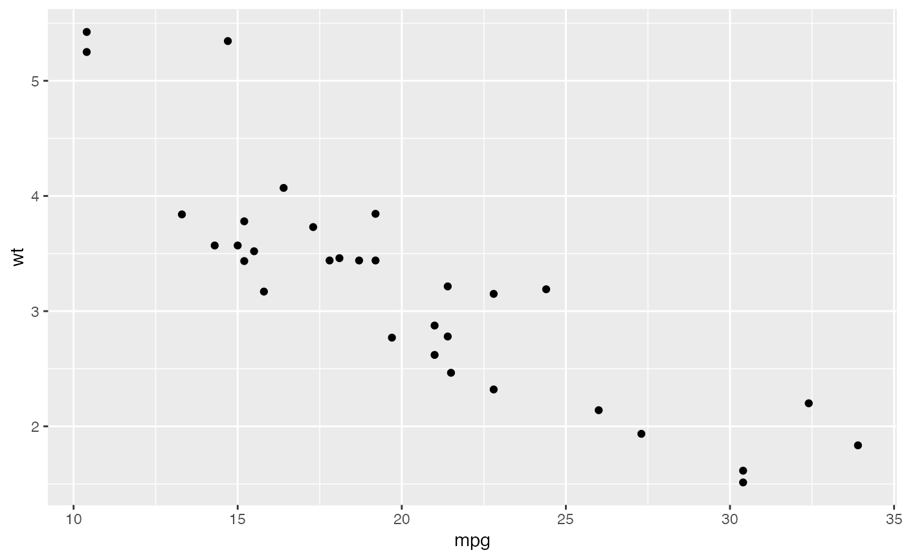
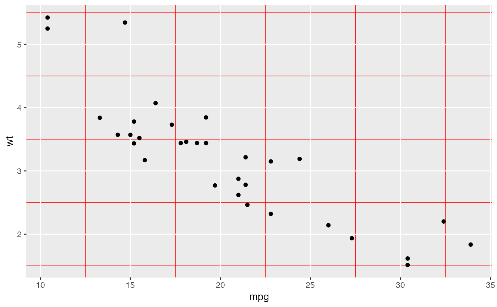
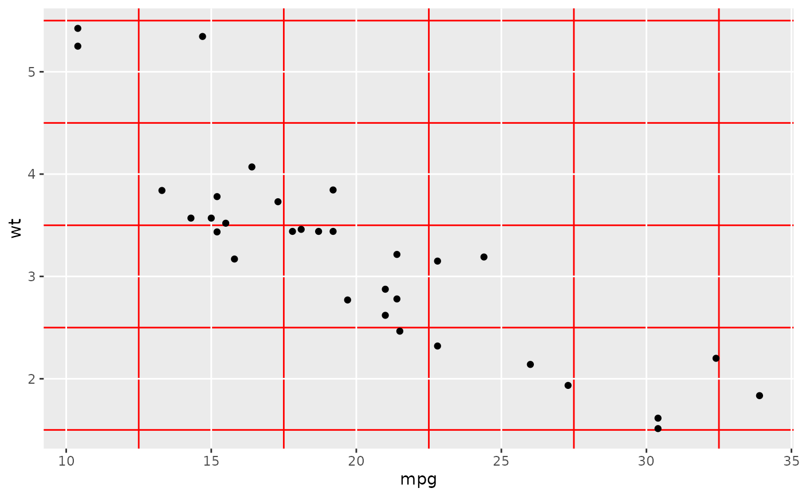
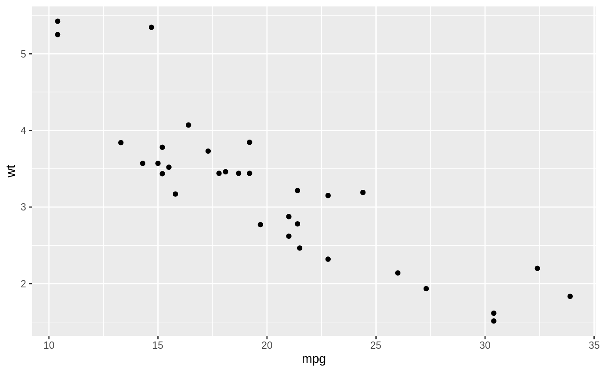

The current/active theme (see theme()) is automatically applied to every
plot you draw. Use theme_get() to get the current theme, and theme_set() to
completely override it. theme_update() and theme_replace() are shorthands for
changing individual elements.
theme_get() theme_set(new) theme_update(...) theme_replace(...) e1 %+replace% e2
Arguments
| new | new theme (a list of theme elements) |
|---|---|
| ... | named list of theme settings |
| e1, e2 | Theme and element to combine |
Value
theme_set(), theme_update(), and theme_replace()
invisibly return the previous theme so you can easily save it, then
later restore it.
Adding on to a theme
+ and %+replace% can be used to modify elements in themes.
+ updates the elements of e1 that differ from elements specified (not
NULL) in e2. Thus this operator can be used to incrementally add or modify
attributes of a ggplot theme.
In contrast, %+replace% replaces the entire element; any element of a
theme not specified in e2 will not be present in the resulting theme (i.e.
NULL). Thus this operator can be used to overwrite an entire theme.
theme_update() uses the + operator, so that any unspecified values in the
theme element will default to the values they are set in the theme.
theme_replace() uses %+replace% to completely replace the element, so any
unspecified values will overwrite the current value in the theme with
NULL.
In summary, the main differences between theme_set(), theme_update(),
and theme_replace() are:
theme_set()completely overrides the current theme.theme_update()modifies a particular element of the current theme using the+operator.theme_replace()modifies a particular element of the current theme using the%+replace%operator.
See also
Examples
# Use theme_set() to completely override the current theme. # theme_update() and theme_replace() are similar except they # apply directly to the current/active theme. # theme_update() modifies a particular element of the current theme. # Here we have the old theme so we can later restore it. # Note that the theme is applied when the plot is drawn, not # when it is created. old <- theme_set(theme_bw()) ptheme_set(old) p# Modifying theme objects ----------------------------------------- # You can use + and %+replace% to modify a theme object. # They differ in how they deal with missing arguments in # the theme elements. add_el <- theme_grey() + theme(text = element_text(family = "Times")) add_el$text#> List of 11 #> $ family : chr "Times" #> $ face : chr "plain" #> $ colour : chr "black" #> $ size : num 11 #> $ hjust : num 0.5 #> $ vjust : num 0.5 #> $ angle : num 0 #> $ lineheight : num 0.9 #> $ margin : 'margin' num [1:4] 0points 0points 0points 0points #> ..- attr(*, "unit")= int 8 #> $ debug : logi FALSE #> $ inherit.blank: logi FALSE #> - attr(*, "class")= chr [1:2] "element_text" "element"#> List of 11 #> $ family : chr "Times" #> $ face : NULL #> $ colour : NULL #> $ size : NULL #> $ hjust : NULL #> $ vjust : NULL #> $ angle : NULL #> $ lineheight : NULL #> $ margin : NULL #> $ debug : NULL #> $ inherit.blank: logi FALSE #> - attr(*, "class")= chr [1:2] "element_text" "element"